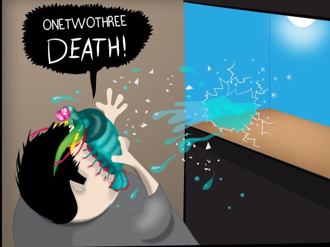
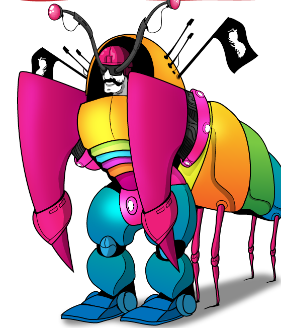
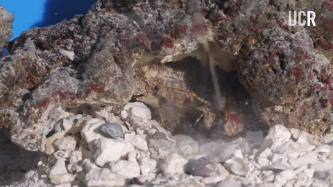

Fatos sobre o Stomatopoda
Learning about Mantis Shrimp
Mantis shrimp, or stomatopods, are carnivorous marine crustaceans of the order Stomatopoda, branching from other members of the class Malacostraca around 340 million years ago. Mantis shrimps typically grow to around 10 cm (3.9 in) in length, while a few can reach up to 38 cm (15 in).A mantis shrimp's carapace (the hard, thick shell that covers crustaceans and some other species) covers only the rear part of the head and the first four segments of the thorax. Varieties range in colour from shades of brown to vivid colours, with more than 450 species of mantis shrimp being known. They are among the most important predators in many shallow, tropical and subtropical marine habitats. However, despite being common, they are poorly understood, as many species spend most of their lives tucked away in burrows and holes. Called "sea locusts" by ancient Assyrians, "prawn killers" in Australia, and now sometimes referred to as "thumb splitters"—because of the animal's ability to inflict painful wounds if handled incautiously—mantis shrimps have powerful raptorials that are used to attack and kill prey either by spearing, stunning, or dismembering. Some mantis shrimp species have specialised calcified "clubs" that can strike with great power, while others have sharp forelimbs used to seize the prey (hence the term "mantis" in its common name).

Odontodactylus scyllarus
| Kingdom | Animalia |
| Phylum | Arthropoda |
| Subphylum | Crustacea |
| Class | Malacostraca |
| Order | Stomatopoda |
Becarefull what you "fish" for
The trhuth is, the mantis shrimp is an undersea nightmare and one of the most creatively violent animals on earth
Undersea Iron Man
Their limbs are so resilient, researchers have been studying their cell structure for use in the development of advance body armor for combat troops.
Smoke "in" the water
Their limbs move so quickly the water around them boils.
Reference List
Yong, E. (2021, May 3). Nature’s Most Amazing Eyes Just Got A Bit Weirder. Science. https://www.nationalgeographic.com/science/article/natures-most-amazing-eyes-just-got-a-bit-weirder
Why the mantis shrimp is my new favorite animal. (2020). The Oatmeal. https://theoatmeal.com/comics/mantis_shrimp
Wikipedia contributors. (2022, January 16). Mantis shrimp [Video]. Wikipedia. https://en.wikipedia.org/wiki/Mantis_shrimp
Mantis Shrimp Packs a Punch | Predator in Paradise. (2019, May 29). [Video]. YouTube. https://www.youtube.com/watch?v=E0Li1k5hGBE